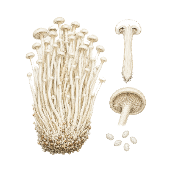

Ficha de especie · Flammulina velutipes
Enoki
Flammulina velutipes
Una seta de tallo largo y sombrero pequeño que se cultiva en clima fresco. Está en estudio, y su forma depende mucho del aire de la sala.
- Etapa
- Perfil en estudio. Sin validación local todavía.
- Referencia
- Fructificación a 14 a 16 °C, 80 % de humedad y unos 300 lux (Lee et al. 2025).
- Origen
- Tenjo, Cundinamarca, Colombia

Lo que ya sabemos del cultivo.
Tomado de estudios publicados. Ninguna cifra está validada en nuestras cámaras.
-
Le sienta el fresco
El rango de referencia, de 14 a 16 °C, está dentro de la temperatura media de Tenjo, de 12 a 18 °C. Falta medirlo en una cámara real.
-
El CO₂ achica el sombrero
En un estudio de 2025, con 10.000 ppm de CO₂ el diámetro del sombrero bajó de 10,2 a 4,8 mm.
-
Responde a una bajada de temperatura
Un estudio de 2002 indica que la fructificación necesita un descenso de temperatura en la oscuridad. Todavía no tenemos el rango en grados ni la duración.
Mira de cerca
El sombrero cuenta el aire.
Si el CO₂ sube, el sombrero se achica. Lo observamos como una señal de que la ventilación de la sala necesita ajuste, antes de tocar otras variables.
Lo que aún medimos.
Hasta tener datos propios, no publicamos ajustes de cultivo como definitivos.
-
Choque frío
Falta definir cuántos grados baja la temperatura y durante cuánto tiempo, con nuestra cepa.
-
Rendimiento propio
Circulan cifras muy altas de eficiencia biológica, pero no pudimos confirmarlas en un texto completo. No usamos ninguna hasta medir nuestros lotes.
Esta es una ficha de especie, no una oferta. No hay producto, precio ni disponibilidad, y no hacemos afirmaciones de salud.